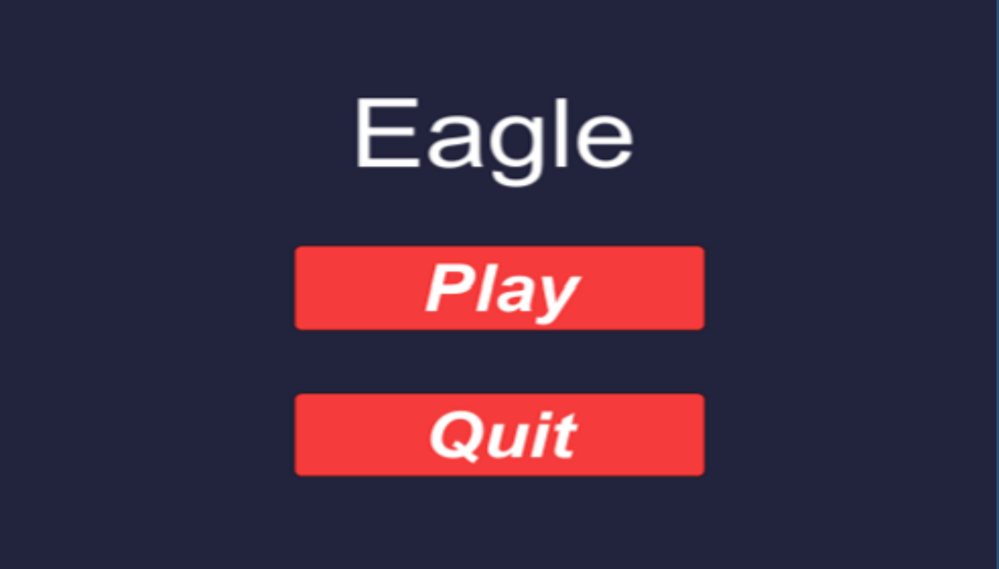

Game Graphics

Voor een ander schoolproject moesten we ons project richten op de feedback die we kregen van medestudenten. Ik wilde iets doen wat ik nog nooit eerder heb gedaan en dat was een AI gebruiken die tegen je zal vechten. Het werd geïnspireerd door games als Brawlhalla en Supersmash vooral als het ging om het uitgangspunt en het gezondheidssysteem van het spel. Toen we de feedbackronde deden, zag ik dat ik veel meer bugs had dan ik dacht. Door bijvoorbeeld op de vijand te springen, vloog je sneller dan de snelheid van het geluid en mijn melee-aanval werkte niet. Na wat verbetering slaagde ik erin het probleem op te lossen en er een voltooid spel van te maken. Het was een belangrijke leercurve in hoe feedback de output van een game kan beïnvloeden.
P.S. Ik heb helaas geen github voor dit project omdat mijn project veel corrupte bestanden had. Ik bied mijn oprechte excuses aan.